In this project I morphed different faces together, changed the shape of a face to that of another, and cross dissolved between the two of them to change the appearance. I also computed the mean face of a woman population and morphed my face into it, as well as it into me. This was a very interesting project visually and I really enjoyed it.
For this part of the project, I decided to morph my face with my mom’s face.
The first thing that I did was to crop, align, and resize the pictures in order to have the same number of pixels and aspect ratio. Then I used the provided tool to map the correspondences in both images. I then added the four corners of the images and generated the Delaunay triangulation.
Me (key points and triangulation)
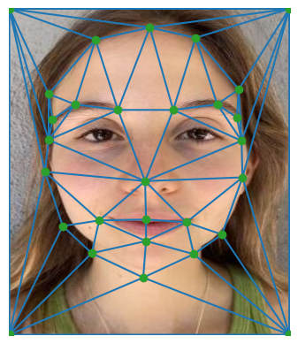My mom (key points and triangulation)
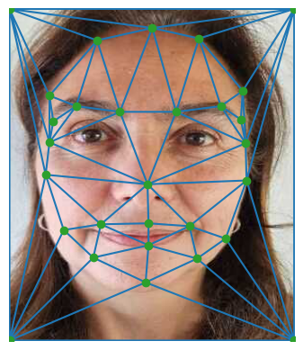I computed the average shape, warped both faces into this shape, and for each triangle in the triangulation:
Me (original):
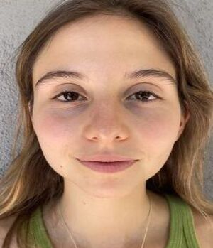Midway face:
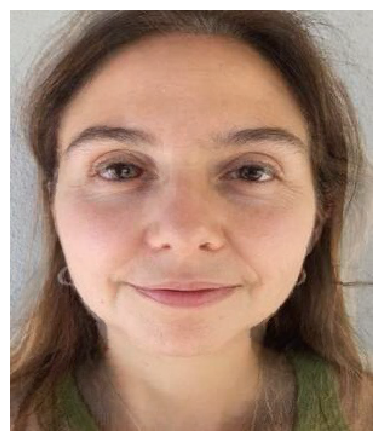My mom (original):
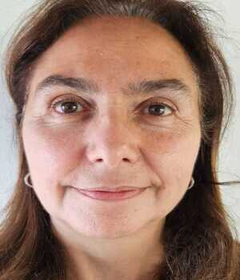I created a morph sequence of 60 frames with a duration of 200 ms per frame by using part 2 and a range of warp and dissolve weights between [0,1].

For this part of the project, I took the pictures of women from the FEI Face Database and computed the mean face of this subpopulation, which has 100 samples.
Average face image:
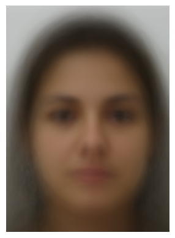I then morphed each of the faces in the dataset into the average shape. Here are some examples:
Here is me warped into the average shape of the population:
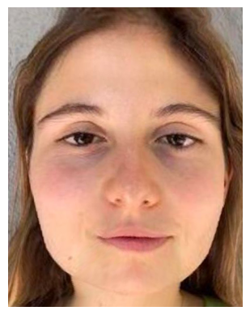And the average shape of the population warped into my geometry:
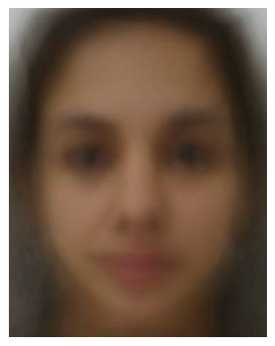I extrapolated from the mean of the previous subpopulation in order to create a caricature of myself. I used -0.8 as my weight for warping to do this.
I changed my gender from woman to man by using the average Spanish men image that I found online (my ancestors are Spanish).
Morphing just the shape: I warped my face into the shape of the average Spanish man.
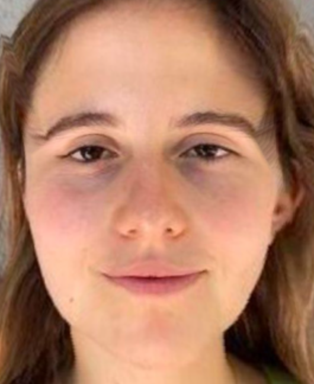Morphing just the appearance: I warped the face of the average Spanish man into my shape and cross-dissolved it with a 0.5 ratio.
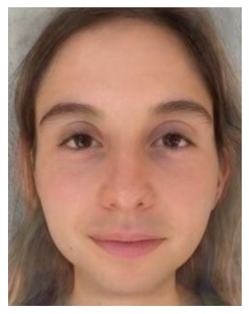Me as a Spanish man: I warped my face into the shape of the average Spanish man and then cross-dissolved it with a 0.5 ratio.
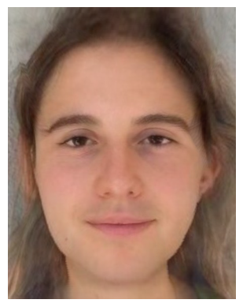